Report of LOTRO ontology project
Index
Introduction
This project is aimed at representing a knowledge graph of our linguistic analysis and creating a web page which makes the philological knowledge accessible to casual users. «As useful tools for sharing and exchanging knowledge, ontologies are a formal, explicit specification of a shared conceptualization». We chose to create a knowledge graph that connects a sample of the characters of the The Lord of the Rings - The Fellowship of the Ring, analyzing their relationships and the etymology of their names. Our ontology will make all the structured knowledge accessible to humans and computer programs and it will also provide a common vocabulary.
Why The Lord of the Rings?
We decided to build our ontology around the book titled The Fellowship of the Ring, namely, the first book of the renowned trilogy The Lord of the Rings, written by the British author J. R.R. Tolkien. The choice was due to our shared interest regarding the topic, but also to the versatility of the book; as a matter of fact, when writing his masterpiece, Tolkien spent a lot of time taking care of every single detail, names creation included, merging his philological and linguistic knowledge with a lot of fantasy and semantic research.
Before being one of the most known writers of our time, Tolkien was a scholar and, particularly, a philologist and a linguist. As a matter of fact, the British professor started inventing and creating new languages when he was very young. He even shared a secret language with his brother Hilary, a language than only the two of them knew and spoke.
Furthermore, Tolkien worked as professor of English language and literature in many British universities, occupation that allowed him to study in depth the language both from the historical and the linguistic point of view. Tolkien became soon one of the major experts of Germanic languages, particularly Anglo-Saxon (or Old English).
We found this topic very interesting, especially because Tolkien managed to use his deep knowledge of linguistics to create from scratch the names of his masterpiece. Other than the article that we mentioned, we found other research works concerning etymology of the names in The Lord of the Rings, mostly made by the fans of the saga, but also an essay written by Tolkien himself and some other papers created by other scholars; despite Tolkien’s work is often associated to some geek and odd worlds, it does possess very interesting features that are studied everyday by experts and professionals.
The core of our analysis, therefore, started from the fact that not only the names are created according to linguistic and philological rules, but the meaning of many names represents the personality and/or the role of the particular character in the novel.
Linguistic analysis
John R.R. Tolkien was not just the writer of The Lord of the Rings and The Hobbit. He was, first and foremost, a linguist and a philologist. Tolkien’s passion for creating not only imaginary worlds, but also languages, started very early in the writer’s life. As a matter of fact, some testimonies in Humphrey Carpenter’s Biography of Tolkien testify how the British writer spent the first years of his life creating imaginary languages that he spoke with his brother, Hilary Tolkien. Growing up, Tolkien became proficient in many ancient languages, until he was recognized as one of the major specialists of Middle and Old English (i.e. Anglo-Saxon). He wrote what was for quite a while the definitive translation of Sir Gawain and the Green Knight and was also very known and appreciated for the essay he presented titled Beowulf: The Monster and the Critics.
In succession, he used his passion and inclination for the linguistic field to broaden his masterpiece of literature and created several languages that are actually spoken by the characters of The Lord of the Rings. Over the progress of our research, we found out that every proper name that Tolkien used to name his characters has a precise etymology and a precise meaning, which is often reflected in the characters’ actions throughout the development of the plot. As a matter of fact, Tolkien took words both from real languages (such as Anglo-Saxon, Middle-English, Modern English, Latin, Welsh) and from languages he created (such as Quenya, Westron or Sindarin) in order to make names that have a precise and studied meaning.
While browsing and looking for information concerning this aspect, we chanced upon a very interesting article written by Ellen Rose Fisher. After an analysis of the key points of the article, we decided that names’ creation deserves a particular attention and is worth studying with proficiency. This is the reason why chose to focus our analysis on names’ creation and etymology.
Therefore, we gathered information both from Fisher’s article and from other reliable sources that we found online. Right after, we created a sort of index where we listed the characters’ names and the meaning associated with it. In our ontology, as it will be explained later, we took a sample of 11 characters, but we analyzed the names of all the characters that appear in the first book.
The result of our research is the following.
| # | Name | Etymology | Language of derivation | Meaning |
|---|---|---|---|---|
| 1 | Frodo Baggins | Frod + Bagging | Anglo-Saxon + Northern English | Wise by experience + Eating between meals |
| 2 | Gollum | Gull | Old Norse | Gold |
| 3 | Samwise Gamgee | Samwís + Gamgee |
Anglo-Saxon + Contemporary English | Simple minded + Cotton Wool |
| 4 | Saruman | Searu | Anglo-Saxon | Malicious work of skill or "device", machine/armoury |
| 5 | Peregrin Took | Pelegrinus + Tûk | Latin + Westron | Wanderer + daring |
| 6 | Meriadoc Brandybuck | Mawr + Udd; Brandagamba | Welsh + Westron | Great + lord; Border-water |
| 7 | Gandalf | gandr + álfr | Old Norse | Wand Elf |
| 8 | Aragorn | Aran + gorn | Sindarin | King + revered |
| 9 | Boromir | bôr + mírë |
Sindarin + Quenya | Steadfast + jewel |
| 10 | Legolas | laeg + golas | Sindarin | Green + foliage |
| 11 | Gimli | Gimm | Old Norse | Fire |
| 12 | Galadriel | Galad + riel | Sindarin | Radiant + maiden |
| 13 | Elrond | Elrond | Sindarin | Star dome |
| 14 | Sauron | Saura | Quenya | Foul, putrid, evil-smelling |
| 15 | Bilbo | Bil + bó / Bilbo | Anglo-Saxon / Contemporary English | Blade + both / cut-and-thrust sword |
Further possible linguistic analysis
We guessed that the etymology of each character’s name identifies a specific meaning that is related to the character’s behaviour or to an event that is important for that character.
It would be very interesting to develop further research about it.
Textual analysis
Machines can access huge databases and elaborate a long text in a short time. Can we produce innovative interpretations of a text by using techniques which rely heavily on computer programs?
The technique called sentiment analysis, allows one to quantify and track emotions from a text corpus, be it big or small. We used this method in order to determine two entities’ emotion association. We did so by taking into consideration and analyzing the co-occurring words in a sample of paragraphs where the two entities appear together.
Another tool that we used for our research is FRED. It extracts, from natural language sentences, event-based knowledge that can be used to automatically produce RDF/OWL ontologies and linked data.
Natural language can be automatically translated into a formal structured knowledge that can be interpreted by machines according to a shared semantics. We analyzed FRED’s output graphs in order to extract useful information to define some properties of our ontologies.
Sentiment analysis
The strategy
First of all, we tried to discover who are characters who appear more often.
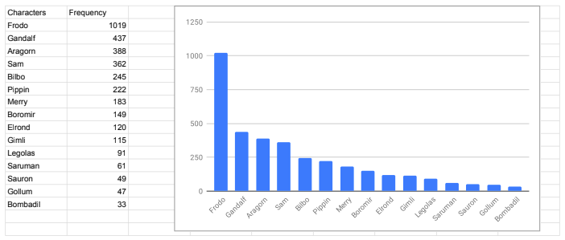
{kind=link}
Once we knew it, we decided to discover how they interact. We took into consideration in our research only the first fifteen characters for number of appearances.
In order to examine the type of relationship between two characters we have implemented a Python program. The program takes any two characters from the text, and checks if those two characters appear in the same paragraph.
After identifying the paragraphs, the program identifies the sentiment of each paragraph by implementing the textBlob Python library. The output of the program is shown by the polarity of the sentiment. The polarity is shown by the values between -1 and 1. If the polarity of a paragraph is lesser than 1, then the relationship is identified as negative. If the value is 0, then the sentiment is neutral, otherwise it’s positive.
The outcome
The chart below shows the result obtained by executing the program:
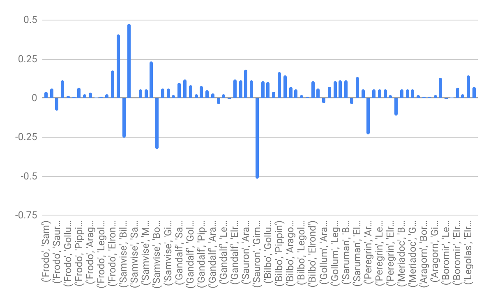
{kind=link}
As one can observe from the chart, the values are between 0 and 1. When the polarity value is below zero, it is implied that the relationship between two characters is negative. The polarity value of paragraphs in which the following characters appear together comes to be negative.
List of characters with negative relationship:
1. Frodo, Sauron
2. Samwise, Boromir
3. Gandalf, Boromir
4. Sauron, Gimli
5. Saruman, Legolas
6. Peregrin, Aragon
7. Boromir, Legolas
The rest of paragraphs have polarity value above zero. This means that the relationship between those two characters is positive.
Limitations
In any case, it is necessary to apply close reading techniques in order to get more reliable and trustworthy results. Distant reading techniques are extremely powerful and can analyze huge amount of text in a very short time, but the human intervention is still needed to improve the outcomes.
That is because, despite the fact that the results of our Python program can be accurate, usually paragraphs discuss about things that are not directly related to characters. Because of this reason it is difficult to determine the type of relationship between characters.
The result of merging close reading and distant reading turns to be in some way similar to the result that we obtained from the distance reading, but with some variance.
Closeness of characters
In addition to sentiment analysis of characters in the book, we also tried to determine how close two characters are. To understand this, we first analyzed paragraphs in which characters appear. After doing that, we counted how many times the charcaters appear together. Then, we concluded that characters that appear together are often closer to each other than those that appear only in a few paragraphs.
The following chart depicts the output of executing our program:
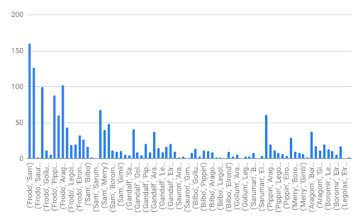
{kind=link}
The chart shows that some characters appear many times together in the book, while some others only for a few times. For example, the following characters appear in the same paragraph more than 60 times:
|
Characters |
Frequency |
|
Frodo and Sam |
160 |
|
Frodo and Gandalf |
127 |
|
Frodo and Aragon |
102 |
|
Frodo and Bilbo |
100 |
|
Frodo and Pippin |
88 |
|
Sam and Pippin |
68 |
|
Pippin and Merry |
61 |
The following table shows characters that appear less than ten times together in the same paragraphs:
|
('Gandalf', 'Sauron') |
5 |
|
('Gandalf', 'Saruman') |
5 |
|
('Saruman', 'Elrond') |
4 |
|
('Pippin', 'Elrond') |
4 |
|
('Sauron', 'Boromir') |
3 |
|
('Bilbo', 'Saruman') |
3 |
|
('Gollum', 'Saruman') |
3 |
|
('Gollum', 'Legolas') |
3 |
|
('Saruman', 'Aragorn') |
3 |
|
('Frodo', 'Sauron') |
2 |
|
('Sam', 'Gollum') |
2 |
|
('Sauron', 'Aragorn') |
2 |
|
('Bilbo', 'Boromir') |
2 |
|
('Bilbo', 'Legolas') |
2 |
|
('Merry', 'Elrond') |
2 |
|
('Gimli', 'Elrond') |
2 |
|
('Sam', 'Saruman') |
1 |
|
('Sauron', 'Gimli') |
1 |
|
('Bilbo', 'Gimli') |
1 |
|
('Gollum', 'Boromir') |
1 |
|
('Saruman', 'Legolas') |
1 |
|
('Legolas', 'Elrond') |
1 |
The tables above can help us to understand how close two characters are. In addition, as depicted in the tables, some characters appear more than hundred times, while others appear together in less than five paragraphs. This in return can guide us to identify characters which are close to each other.
FRED
FRED is a tool that extracts event-based knowledge from natural language sentences. This knowledge can be used to automatically produce RDF/OWL ontologies and linked data. FRED is able to transform natural language text into formal and structured knowledge that can be interpreted by machines according to a shared semantics.
We used just a small extent of its potentiality. As a matter of fact, we just analyzed FRED’s output graphs in order to extract useful information able define some properties.
What is FRED?
According to a paper describing FRED published in the Semantic Web Journal by IOS Press, FRED is a tool able to transform natural language text to formal structured knowledge that can be interpreted by machines according to a shared semantics. It can parse natural language text in 48 different languages and transform it to linked data.
FRED’s output graph is designed according to Frame Semantics and ontology design patterns. Verbs or other linguistic constructions recognized in an input text are formalized as OWL n-ary relations and they can be expressed by instances of some type of event or situation.
When it is possible, individuals are linked to existing semantic web entities (e.g. dbpedia). FRED can be very useful to extract relations between frames, events, concepts and entities and for the pattern-based subgraph extraction. Moreover, it can be used so as to make semantic annotation of text fragments, to link the entities into Semantic Web data and for the word-sense disambiguation.
How did we use it?
What are the limits and possibilities of the knowledge extraction from text? Natural languages can be ambiguous, and the literal interpretation of a text is not always the correct one.
However, FRED can be potentially used for the the word-sense disambiguation and to extract relations between concepts and entities.
In particular, we used this tool and the graphs which were generated in order to extract useful information able to define properties.
For instance, here you can read a phrase that we extracted from the text. Two characters are involved, Frodo and Bilbo Baggins:
«When Bilbo was ninety-nine, he adopted Frodo as his heir, and brought him to live at Bag End.»
We used FRED in order to visualize the graph structure:
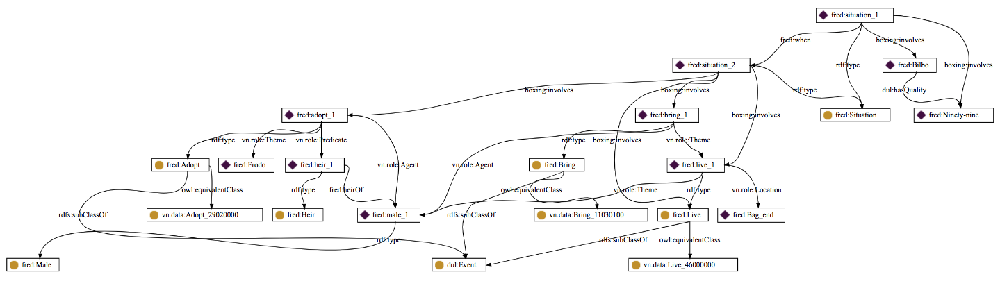
By analyzing the graph structure, you can see that we have two situations: in the first one it is specified that Bilbo has the quality of being ninety-nine. Instead, in the second situation, a more complex scenario is displayed. Here, Bilbo lives in Bag End with his adopted heir, Frodo.
The formalization of this phrase allows no ambiguity and the expressed knowledge can be interpreted by machines.
It can be expressed in different formats such as RDF/XML or RDF/JASON, Turtle etc... we used our ontology in order to represent the same knowledge:
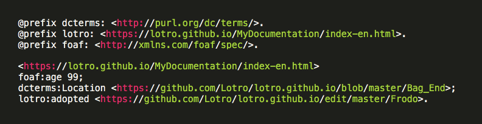
{kind=link}
It can also be visualized in this way:
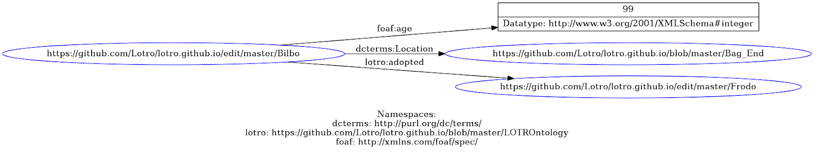
{kind=link}
We have also another example of how we used FRED in order to make explicit some relationships among characters. In fact, another phrase that we extracted from the text is:
«Bilbo and Frodo happened to have the same birthday, September 22nd.»
Again, we used FRED in order to visualize the graph structure:
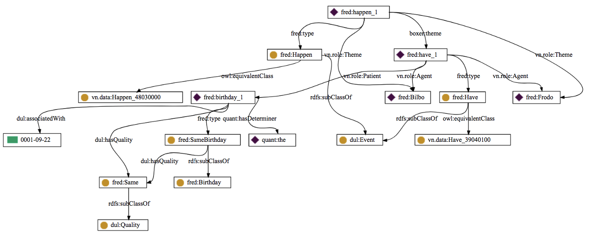
In this case, the graph identifies two entities: Bilbo and Frodo, then it shows that they share an event, as a matter of fact they have in common the same birthday (09-22).
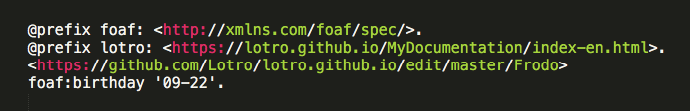
{kind=link}
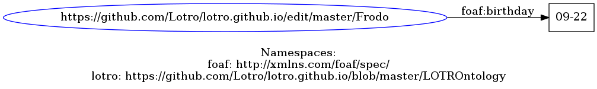
{kind=link}
and

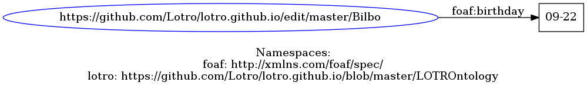
{kind=link}
Possible future implementation
We thought that a possible future development of our work could be an implementation of FRED with our ontology, as the tool is now linked to DBpedia, WordNet, schema.org, VerbNet, FrameNet and other figures. In such a situation, we could use FRED’s API on the text of The Lord of The Rings. Right after, we would reuse the NLP output generated by FRED connecting the entities and the relations in The Lord of the Rings in order to generate Linked Data patterns, links between the entities or a broad annotation of the text. Finally, this could allow the representation of an interface able to create queries on the knowledge extracted by the text, for instance converting automatically natural language question in SPARQL (possibly with tools like Quepy).
So far, we used FRED simply to extract from the text the relationships developing among the characters without any ambiguities.
Potentially, we could use FRED’s API in order to automatically generate knowledge from the text and give it a structure and a formal expression through our ontology. Once our ontology has been created and published online, we could reuse the NLP output generated by FRED connecting our entities and the relations in LOD. Using tools like Quepy, we could transform natural language questions into queries.
For example, the question "Who is Frodo Baggins?" will be translated into:
SELECT DISTINCT ?x1 WHERE {
?x0 rdf:type lotro:Character.
?x0 rdfs:label "Frodo Baggins"@en.
}
Our ontology will then provide some useful knowledge, for example, from the ontology properties:
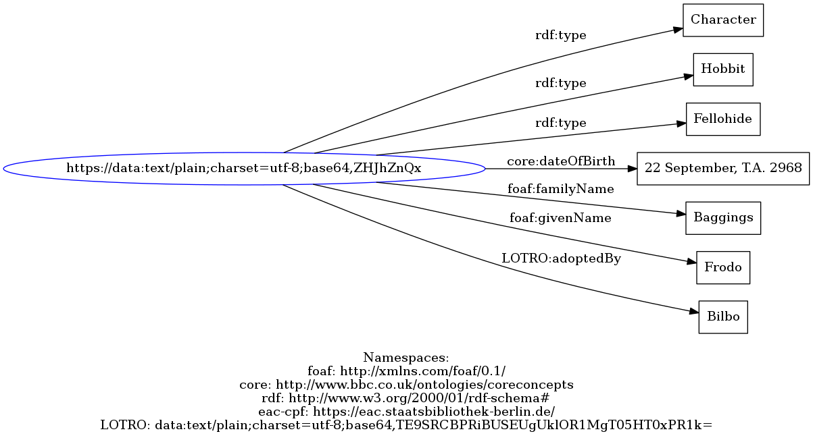
{kind=link}
And more from the annotated text that we will have with the possible future implementation.
Representation of the information
After having collected the data through the Sentiment analysis technique and the FRED interpretation of the text, we structured the automatically extracted data in information thanks to our previous knowledge of the topic and to specific linguistic research; therefore we applied the close-reading technique to the distant-reading one.
Humans have the ability to contextualize data providing a sense and a context to them through their personal knowledge of the topic, but a casual user may be unaware of the events or the characters that populate The Lord of the Rings - The Fellowship of the Ring; furthermore, we needed to make this data understandable also by computer programs. For these reasons, we created relationships and chose the information that we wanted to represent in our ontology in order to provide both casual users and computer programs with the most important knowledge about the topic.
Therefore, we selected the main point of interest for each character, the type of relationship among them and, in particular, the actual meaning behind each name. In fact, we chose to represent only the information about a sample of characters who appear more and have more interactions following our textual research. Moreover, we decided to give more space to the member of the the Fellowship of the Ring, a group of characters that have the mission to help the protagonist Frodo.
Then we chose to represent their names and their languages, because of the relevance of Tolkien’s linguistic studies. As we already said, the writer had a keen interest in linguistics and philology and, consequently in the wide meaning which lies beyond the surface of the words. Every noun in the text has a meaning and he created also entire languages in his literary works.
Another aspect that Tolkien developed very carefully was the geography of Middle-earth, namely, the fictional setting his main work. He created his imaginary continent very precisely, therefore we wanted to provide the user of our ontology with some information concerning the places where the characters live and act. Finally, we chose to represent also the weapons of the characters because of some of their name, meaningful and useful in our etymological analysis of The Lord of the Rings .
Structuring and Ontology creation
An ontology is capable of providing many benefits to various kinds of users. As a matter of fact, an ontology is useful to:
share common understanding of the domain and the related knowledge both among humans and machines;
reuse the gained knowledge in other projects without having to start from scratch every time;
broaden the knowledge about a specific domain or topic.
If one wants to know a scholar definition of ontology, he/she should take into consideration the one which was given by Gruber and Borst:
«An ontology is a formal, explicit specification of a shared conceptualization. Conceptualization refers to an abstract model of some phenomenon in the world by having identified the relevant concepts of that phenomenon. Explicit means that the type of concepts used, and the constraints on their use are explicitly defined. Formal refers to the fact that the ontology should be machine-readable. Shared reflects that notion that an ontology captures consensual knowledge that is, it is not private of some individual, but accepted by a group.»
Therefore, an ontology can be defined as a model which represents knowledge as a set of concepts within a domain. An ontology also captures the relationships between these concepts. An ontology is a form of knowledge management that captures the knowledge within an organization as a model. This model can then be queried by users to answer complex questions and display relationships across an enterprise.
But how can an ontology be useful?
Today, people have access to more data in a single day than most people had access to in a lifetime in previous decades. The problem is that the data are found in many different forms and all of this information captured in many different formats makes it almost impossible to understand existing relationships between different data. Consequently, understanding the relationships occurring among these data is not an easy task at all.
Data need to be represented in a format that allows these types of relationships to be understood.
With an ontology you can capture data in a way that makes these relationships more visible.
The main aspect of ontologies concerns that their most important features are classes and relationships. To use our project to explain what is an ontology, we could take two classes as an example. Let’s take Character and Language. The relationships occurring between the two classes is “speaks”. Therefore, we can say that the instances contained in the class “Character” speak at least one language. This kind of relationship is known as “triple”, and it is based on a subject (Character), a predicate (speaks) and an object (Language). These results can then be merged together to provide a comprehensive view of the real world within an ontology.
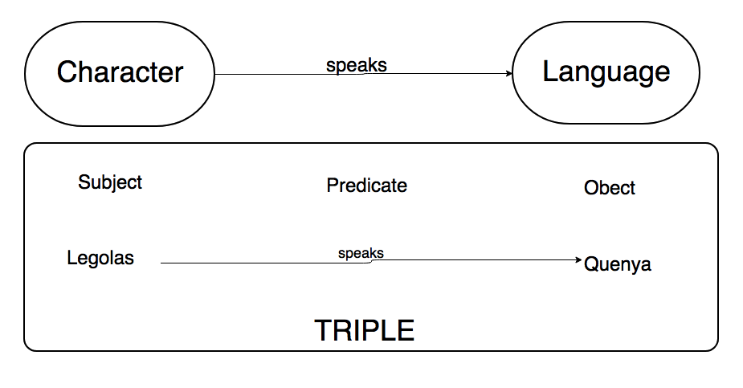
{kind=link}
Therefore, the ontology is a machine-readable abstract model of some phenomenons that can identify concepts.
As far as our project is concerned, the knowledge that we chose to represent has been accepted by a broad group of people, because we based most of our research and the interpretation of our data on literatures, documents, technical information, provided by scholars and fans of the topic.
However, an important point concerns the fact that our ideas of the topic can be different from the ones of other people, as there is not a single or correct way to model a domain.
In order for our knowledge to be shared with casual users and software agents, we needed it to be structured in a logic way that had also to be easily translated into a machine-readable code. We created a domain ontology with conceptualization of concepts (the concept of “name” in particular), relations and attributes belonging to a particular field of interest, namely, The Lord of the Rings - The Fellowship of the Ring, the first part of J. R. R. Tolkien’s most famous trilogy.
The development of our ontology has been an iterative process, as we kept modifying everything at every step we made because new structures, new ideas and new relevant information kept arising.
In succession, for each of the character we analyzed, we defined some shared properties and, once we knew that we wanted to represent a certain relationship, we needed to find how to make it explicit through a subject-predicate-object relationship.
We reused existent ontology when it was possible and we created new properties when and were it was necessary.
The software that we used to create our ontology is the open-source ontology editor Protégé.
Our ontology contains classes and relationships.
Classes
We chose the classes that represent concepts (either physical/specific or abstract/conceptual). Then, we organized them in taxonomies to define a superclass- subclass hierarchy.
The nesting represent the following top-down hierarchy
Character
Hobbit
Fallohide
Harfoot
Stoor
Human
Elf
Vanyar
Noldor
Teleri
Dwarf
Maiar
Name
Language
Weapon
Axe
Sword
Staff
Bow
Ring
Place
We decided that our focus had to be on the characters, so we defined the concept “Character” as a class, and then we created the subclasses from the sub-categories in which the characters are divided also in the text. In succession, we created the class “Name” since names’ etymology is a special point of interest in our project. Finally, we created the other classes: Place, Language and Weapon (with the internal sub-division by type that defined the subclasses).
After having created the classes, we disjointed them, so that an individual cannot be an instance of more than one of these classes. By doing so, we avoided the creation of different entities with the same name, even if they represent different individuals belonging to different classes, but we could have named them in the same way, only specifying in which classes they were.
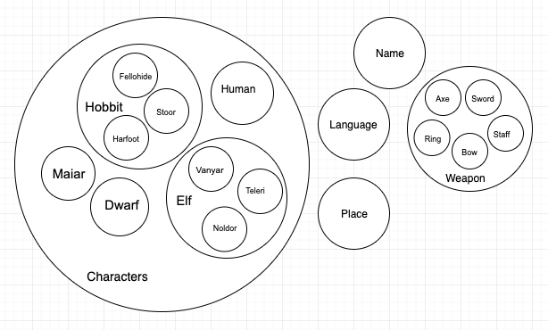
{kind=link}
Relationships
We defined some relationships that associate concepts, usually verbs end up as relations between two concepts. We also defined some properties, they are: aspects, properties, features, characteristics, or parameters that objects can have.
Thanks to our textual and linguistic research and to the sequential interpretations, we defined some important relationships among concepts and we chose to represent them. For each relation we chose a name, one or more source concepts (Domain), one or more target concepts (Range), the cardinality (when we wanted to specify the number of individuals involved in the restriction) and the inverse name.
We defined the relations, Object Properties, when the relationship is between two individuals, and the properties, Data Properties, when the relationship is between an individual and a primitive (String, Boolean, Integer and so on).
Then we put together the properties in relation to their Domain and Range.
Object properties
Character - Character
lotro:enemyOf → Identifies a negative relationship
lotro:friendOf → Identifies a positive relationship
lotro:uncleOf → Identifies a family relationship (uncle)
lotro:nephewOf → Identifies a family relationship (nephew)
lotro:adopt → Identifies a family relationship (adoption)
Character - Name
foaf:family_name → Identifies the family name
foaf:name → Identifies the name
Character - Weapon
lotro:hasWeapon → Identifies the weapon
Character - Place
dcterms:Location → Identifies the location where the character lives
Language - Name
foaf:name → Identifies the name
Weapon - Name
foaf:name → Identifies the name
Place - Name
foaf:name → Identifies the name
Place - Character
lotro:inhabitants → Identifies the inhabitants
Character - Language
lotro:speaks → Identifies the language that is spoken
Language - Place
lotro:spokenIn → Identifies the place where a language is spoken
Language - Character
lotro:spokenBy → Identifies the speakers
Data properties
Character - xsd:string
foaf:member → Identifies the group or an agent that is member of that group
core:dateOfBirth → Identifies the date of birth
core:dateOfDeath → Identifies the date of death
Name - xsd:string
lotro:isWrittenAs → Identifies the spelling
lotro:hasEtimology → Identifies the etymology
lotro:means → Identifies the meaning with a definition
Character - URI
owl:SameAs → points to an URI identifying the same individual
A relation in particular, namely, the one which regards the names, involves all the classes as domains, because in the Tolkien’s universe all the names have a particular meaning and it was one of our main point of interest.
foaf:name → Domain: all classes
Range: Name
We also put some restrictions in the cardinality of the object property Speaks. As a matter of fact, the declaration “Speaks min 1” denotes that the individuals of class Character, which are related to other individuals of the class Language by the Speaks relationship, have at least one location. It does not impose any constraint in the individuals who do not have the relation Speaks, but if there are any who have it, then they must speak at least one Language.
Instances
Finally, we created some elements or individuals, the instances that, in an ontology, represent objects in the domain in which we are interested.
We created some individuals for each class and we defined some formal axioms, to model sentences that are always true, giving properties and values to each individual. Some individuals of the class Characters are: Frodo, Samwise, Bilbo, Aragorn, Peregrin, Meriadoc, Aragorn, Gandalf, Sauron, Saruman, Gimli and Legolas. Then, for each of them we defined an instance of the class Name, then we filled our ontology with all the information we thought that would have been useful for the user of our ontology.
A simplified schema of our ontology
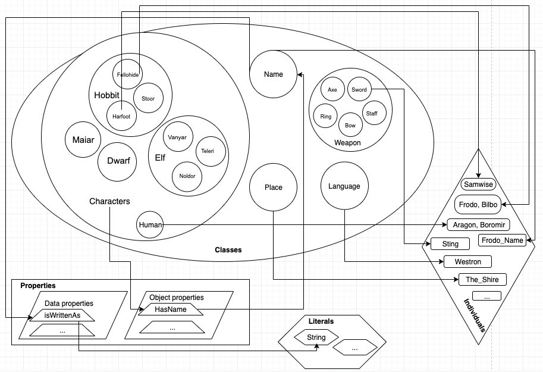
{kind=link}
Some of our individuals
|
FRODO |
|
|
lotro:hasWeapon |
Sting |
|
dcterms:Location |
TheShire |
|
foaf:family_name |
Baggings_NAME |
|
foaf:name |
FRODO_NAME |
|
lotro:enemyOf |
SAURON |
|
lotro:friendOf |
SAM, GANDALF, BILBO |
|
lotro:speaks |
Westron; Sindarin |
|
lotro:nephewOf |
BILBO |
|
core:dateOfBirth |
‘22 September, T.A. 2968’ |
|
foaf:member |
‘The Fellowship of the Ring’ |
|
FRODO_NAME |
|
|
lotro:isWrittenAs |
‘Frodo’ |
|
lotro:hasEtimology |
‘Frod - Anglosaxon’ |
|
lotro:means |
‘wise by experience, a good sense of judgement’ |
|
BAGGINS_NAME |
|
|
lotro:isWrittenAs |
‘Baggings’ |
|
lotro:hasEtimology |
‘Bagging - Northern English’ |
|
lotro:means |
‘eating between meals, the end of a bag’ |
|
Sting |
|
|
foaf:name |
Sting_name |
|
TheShire |
|
|
foaf:name |
TheShire_name |
|
lotro:Inhabitants |
‘Hobbits’ |
|
Westron |
|
|
foaf:name |
Westron_name |
|
lotro:spokenIn |
TheShire_place |
|
lotro:spokenBy |
Frodo_fellohide, Sam_hairfoot, Gandalf_maiar, Bilbo_fellohide |
|
Sindarin |
|
|
foaf:name |
Sindarin_name |
|
lotro:spokenIn |
Arda_place |
|
lotro:spokenBy |
Gandalf_maiar |
|
Sting_name |
|
|
lotro:isWrittenAs |
‘Sting’ |
|
lotro:hasEtimology |
‘stincg, steng - Anglosaxon’ |
|
lotro:means |
‘act of stinging, puncture, thrust’ |
|
TheShire_name |
|
|
lotro:isWrittenAs |
‘The Shire’ |
|
lotro:hasEtimology |
‘scira - Old High German’ |
|
lotro:means |
‘district, province, country’ |
|
Westron_name |
|
|
lotro:isWrittenAs |
‘Westron’ |
|
lotro:hasEtimology |
‘Adûnaic Adûn - Númenórean’ |
|
lotro:means |
‘Language of the West’ |
|
Sindarin_name |
|
|
lotro:isWrittenAs |
‘Sindarin’ |
|
lotro:hasEtimology |
‘Sindar - Quenya’ |
|
lotro:means |
‘Grey Elivsh language’ |
Publication and visualization of our ontology
After having created and edited the definitive version of LOTRO Ontology, we decided that we needed to represent it in a way that was both nice to see and easy to consult. Widoco, WebVOWL and RDF Grapher were the three tools that we found and that were able to satisfy our necessity.
Widoco is a step by step generator of HTML templates with the documentation of the ontology. It helps you to publish and create an enriched and customized documentation of your ontology by following a series of steps in a wizard. The result of running our ontology with Widoco can be seen here.
WebVOWL is a web application for the interactive visualization of ontologies. It implements the Visual Notation for OWL Ontologies (VOWL) by providing graphical depictions for elements of the Web Ontology Language (OWL) that are combined to a force-directed graph layout representing the ontology. Interaction techniques allow to explore the ontology and to customize the visualization. The VOWL visualizations are automatically generated from JSON files into which the ontologies need to be converted. A Java-based OWL2VOWL converter is provided along with WebVOWL.
This is the result of uploading our ontology to the WebVOWL tool:
RDF Grapher is a web service for parsing RDF data and visualizing it as a graph. We exported our ontology as a Turtle file (ttl), a coding language that can be read by the grapher. The result is a huge graph, and can be downloaded here.
You can even see and analyze the XML/OWL code of our ontology by clicking here
Conclusions
With this project, we discovered that in The Lord of the Rings we never have phenomena such as the homonymy, something that no one ever noticed so far. That is because Tolkien created every single name after a very broad and detailed philological and linguistic analysis: every character, as a matter of fact, have their own personality which is often derived by the name he/she carries.
Furthermore, we noticed that many topics could be developed a studied in a broader way; Tolkien’s universe is huge and the more one studies it, the more one finds out other aspects that would be worth examining in depth.
However, the final outcome of our research and implementation concerns the creation of an ontology able to share our knowledge with other users that could be interested in the topics we covered. Everything we created is open source and can be reused by everyone else. We made everything we did available, from the OWL files we used to the Python code we wrote.
As we pointed out formerly, we took just a sample of characters related to the first book of the trilogy only. Consequently, we are aware of the fact and we state that our ontology could be further developed to get a thorough view of the topic.
Bibliography and Sitography
Carpenter Humphrey, J R.R: Tolkien – La biografia, Fanucci Editore, Roma, 2002.
Ellen Rose Fisher, An analysis of Tolkien’s use of Old English language to create the personal names of key characters in The Lord of the Rings and the significance of these linguistic choices in regards to character development and the discussion of humanity in the novel more widely, Innervate, Nottingham University, Online journal publication, 2014,
Eric T. Nalisnick Henry S. Baird, Character-to-Character Sentiment Analysis in Shakespeare’s Plays, Dept. of Computer Science and Engineering Lehigh University, Bethlehem, PA 18015, USA, 2013
Henry Baird, H. S. Baird, H. Baird, K. S. Baird, Extracting Sentiment Networks from Shakespeare's Plays, 2013
Julita Bermejo, A Simplified Guide to Create an Ontology, Universidad politécnica de Madrid, May 2007
Tolkien Gateway, the J. R.R. Tolkien Encyclopedia